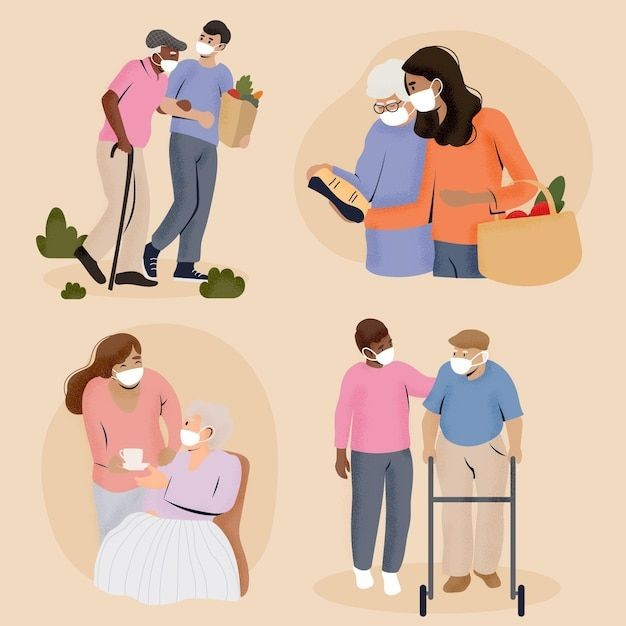

INTRODUCCIÓN:
¿Puede recordar más de una situación en la que usted haya brindado ayuda? Al ayudar a los demás podemos notar el bienestar que les trae, pero ¿ha reflexionado sobre los beneficios que una conducta altruista aporta a su vida? Asumir que todos y cada uno de nuestros actos tiene consecuencia e impactan en los demás, no solo nos permite influir en el entorno que nos rodea, sino también en nuestro entorno propio desarrollo personal. En esta lección se exploran los beneficios que nos trae ser solidarios con los demás

¿Qué se te viene a la mente?
Que pobres de sus familiares al saber que hubo ese accidente y estaba su familia hay
¿Como podrías ayudar?
Pues yo casi en nada simplemente seria en los oficiales que estén más al pendiente de las calles
¿Por qué crees que sucedieron así las cosas?
Por qué tuvieron un problema con gente mal
¿Qué conductas y valores se ponen en práctica?
Tristeza
CONCLUCIÓN:
Los accidentes pueden pasar cuando menos lo esperas así mismo sea por cosas malas u
cosas que te llegan repentinamente, mas sin embargo todos estamos preparados para eso en esta lección aprendí que tenemos que hacer las cosas bien sin mirar a los demás todos los días sales de tu casa sin saber si vas a llegar bien sano y salvo, sabemos
y queremos llegar con a nuestras cosas uno no sabe siempre que es lo que va a pasar en un día si llegarás con bien o no, siempre hay que ser precavidos ver y no meterse en líos para estar bien y manejar con cuidado
|